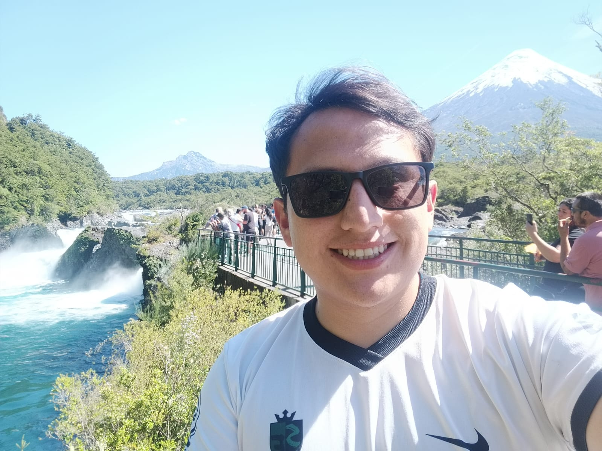

Doctoral Consortium USM, PUCV, UV. Valparaíso, Chile. 2024 to present
- Primary research area: control theory and inverse problems.
- Advisors: Patricio Guzmán and Hugo Parada.
Ph.D. student in Mathematics. I study the controllability and stabilization of partial differential equations.

I am a Ph.D. student in Mathematics from Celica, Loja, Ecuador. Since March 2024 I have been part of the Doctoral Consortium of Valparaíso, a joint program of USM, PUCV and UV, under the supervision of Patricio Guzmán and Hugo Parada.
My work focuses on the controllability and stabilization of partial differential equations, in particular feedback laws that force solutions of parabolic equations to decay at a prescribed exponential rate.
I am interested in control theory, specifically the controllability and stabilization of partial differential equations (PDEs).